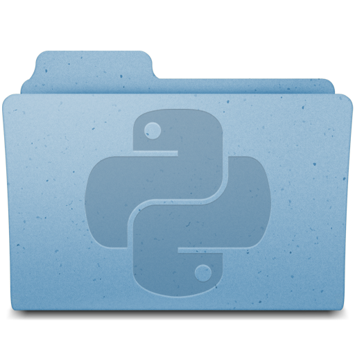

Some of the things I've worked on in my free time.
| pypush | Python script that continuously monitors your local directory and immediately uploads any changes you make to your specified remote directory. What sets pypush apart is its real-time sync, and its integration with Git/Mercurial. |
| Heracles | Mac app that makes using Kerberos dead simple. Just set and forget. |
| imap-import | Heroku app that uses the IMAP IDLE command to immediately import email from multiple IMAP accounts to one Gmail account. |
| Python icon | Python 3 still uses an old-style Mac icon in its installer. I created this quick replacement with the help of an online tutorial. For instructions on changing Mac folder icons, look here. |
| Gmail SSB | Mac app for Gmail with some nice features. |
A selection of notable code I've created for classes at Stanford.
CS 140 (Operating Systems and Systems Programming) - added various features to an operating system, including priority scheduling, virtual memory and a much-improved file system.
CS 143 (Compilers) - implemented a compiler for COOL, the Classroom Object Oriented Language.
CS 110 (Principles of Computer Systems) - multi-threaded code with access to shared resources that performed synchronization without locks.
CS 106B (Programming Abstractions) - interpreter for BASIC. This was the second introductory programming class at Stanford.
CS 147 (Intro to Human-Computer Interaction Design) - mobile website to find, compare and rate doctors in your area.
CS 107 (Computer Organization and Systems) - heap allocator. Achieved about 125% throughput as compared to libc malloc and 80% memory utilization on the given test cases.
CS 229 (Machine Learning) - explored predicting cancer type based on genome data. Check out our poster here.
{kind=link}